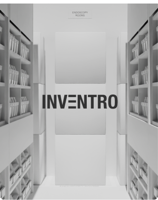
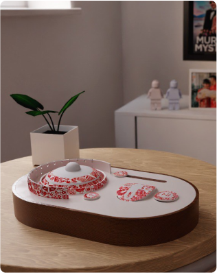
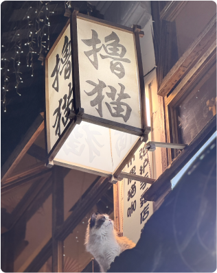

Product / Interactive Design

Service Design


Photography
What I Have Done So Far!
My creative practice spans across service these three mediums.
What I Have Done So Far!
My creative practice spans across service these three mediums.